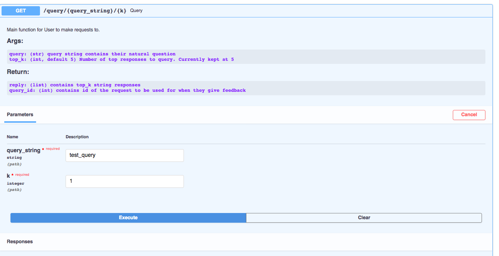

GoldenRetriever’s API Functions¶
GoldenRetriever may be deployed as an API application. Below are the functions that power the endpoints. Alternatively, you may view the interactive fastAPI docs at localhost:80/docs, which may look like the screenshot below.
-
api.main_es.query(query_string: str, k: int = 5)¶ Main function for User to make requests to.
- Parameters
query (str) – query string contains their natural question
top_k (int, default 5) – Number of top responses to query. Currently kept at 5
- Returns
a list that contains top_k string responses
- Returns
an integer query_id that contains id of the request to be used for when they give feedback
-
api.main_es.save_feedback(feedback_request: app.api.feedback_service_es.FeedbackRequest)¶ Update ES querylog index with user feedback
- Parameters
feedback_request – See declared basemodel below.
- Returns
A dictionary indicated successful transaction as such {‘resp’: ‘updated’}
class FeedbackRequest(BaseModel): query_id: str is_correct: List[bool]
-
async
api.main_es.save_weights(minio_param: app.api.upload_weights_service_es.MinioParam = <fastapi.params.Depends object>, file: fastapi.datastructures.UploadFile = File(default=Ellipsis, extra={}))¶ Upload finetuned weights to an minio s3 storage container. Include minio params as form data along with file for uploading
Sample form data:
{ 'minio_url': MINIO_URL 'minio_access_key': MINIO_ACCESS_KEY 'minio_secret_key': MINIO_SECRET_KEY 'bucket_name': BUCKET_NAME, 'object_name': OBJECT_NAME }
-
async
api.main_es.upload_kb(es_param: app.api.upload_es_kb_service.EsParam = <fastapi.params.Depends object>, csv_file: fastapi.datastructures.UploadFile = File(default=Ellipsis, extra={}))¶ Index QnA datasets into Elasticsearch for downstream finetuning and serving
- Parameters
es_param (str) – can be ‘query’ or ‘response’. Use to compare statements
csv_file – csv file containing queries and responses. CSV files should have the following columns: [ans_id, ans_str, context_str (optional), query_str, query_id]
- Returns
response dictionary as such: {‘message’: ‘success’, ‘number of docs’: counter}
- Returns
query_id, an int that contains id of the request to be used for when they give feedback